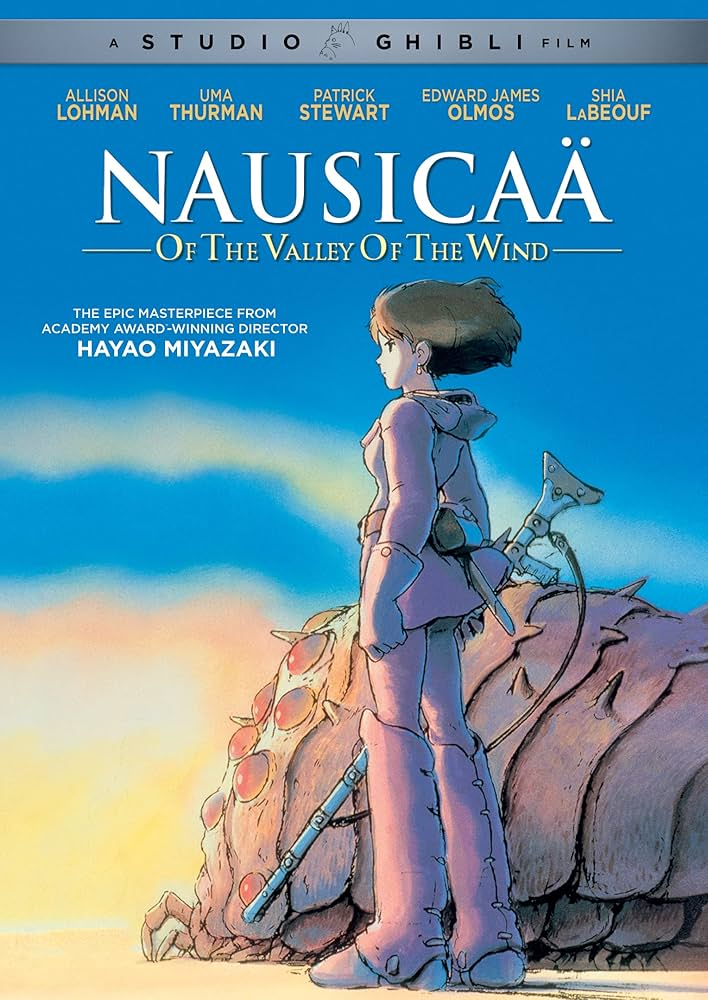
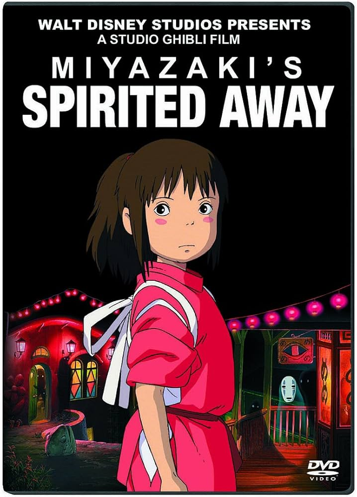
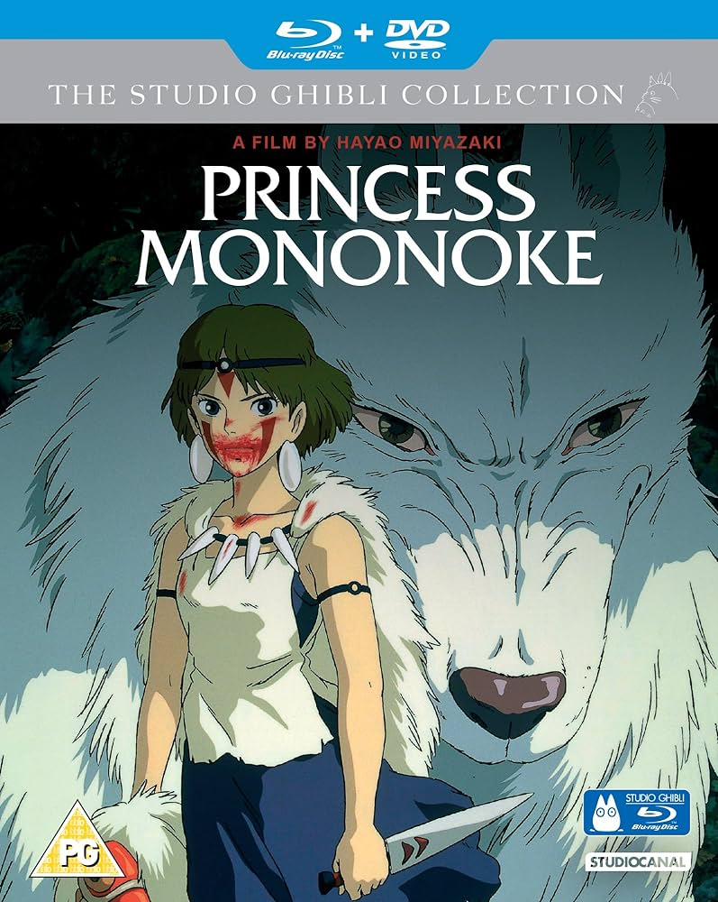
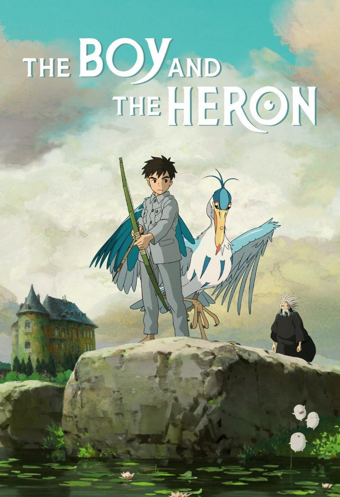

Año: 1984
Duración: 1h 57min
Puntuación: 8 / 10
Sinopsis: Nausicaä, una princesa guerrera pero pacifista, lucha para evitar que dos naciones en guerra se destruyan a si mismas y al planeta, que se está muriendo.
Estrellas: Sumi Shimamoto, Mahito Tsujimura, Hisako Kyôda
Anécdota: En el momento en el que 'Nausicaä del Valle del Viento' llegó a los cines estadounidenses lo hizo con otro nombre ('Los Guerreros del Viento') y con una versión reducida que dejaba sus dos horas originales en poco más de hora y media, cambios que provocaron un enfado Hayao Miyazaki que duró muchos años.
Premios: 3 premios y 1 nominación en total.

Año: 2001
Duración: 2h 4min
Puntuación: 8,6 / 10
Sinopsis: Durante el traslado de su familia a los suburbios, una niña de 10 años de edad deambula por un mundo gobernado por dioses, brujas y espíritus, y donde los humanos se convierten en bestias.
Estrellas: Miyu Irino, Rumi Hiiragi, Mari Natsuki
Anécdota: La escena del dios pestilente proviene de una experiencia real de Miyazaki, quien participó en la limpieza de un río de su localidad. Encontraron una bicicleta atascada, lo que inspiró la escena donde extraen basura del espíritu.
Premios: Ganó 1 premio Óscar, 58 premios y 31 nominaciones en total.

Año: 1997
Duración: 2h 13min
Puntuación: 8,3 / 10
Sinopsis: En un viaje para descubrir la cura de la maldición de Tatarigami, Ashitaka se encuentra en medio de una guerra entre los dioses del bosque y Tatara, una colonia minera. En esta búsqueda también conoce a San, el Mononoke Hime.
Estrellas: Yôji Matsuda, Yuriko Ishida, Yûko Tanaka
Anécdota: La escena inicial del jabalí infectado fue extremadamente difícil. Tardaron un año y siete meses en completarla, utilizando aproximadamente 5.300 dibujos.
Premios: 14 premios y 6 nominaciones en total.

Año: 2023
Duración: 2h 4min
Puntuación: 7,3 / 10
Sinopsis: Sigue el desarrollo psicológico de un adolescente a través de las interacciones con sus amigos y su tío. Se basa en el libro del mismo nombre de 1937 de Genzaburo Yoshino
Estrellas: Soma Santoki, Masaki Suda, Kô Shibasaki
Anécdota: Según el productor Toshio Suzuki, El niño y la garza es la película más cara jamás producida en Japón.
Premios: Ganó 1 premio Óscar, 34 premios y 87 nominaciones en total.